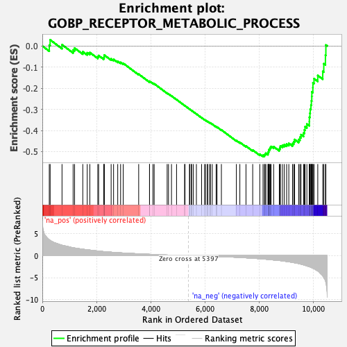
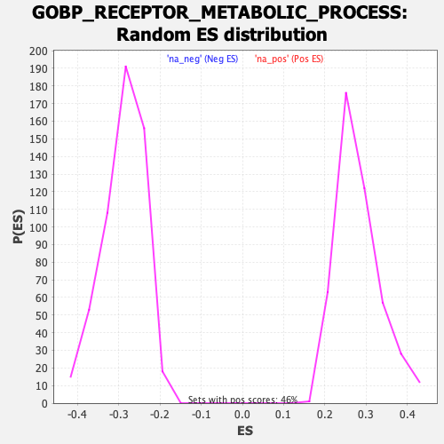

| Dataset | qlf.KOd4vsWTd4_gsea_score |
| Phenotype | NoPhenotypeAvailable |
| Upregulated in class | na_neg |
| GeneSet | GOBP_RECEPTOR_METABOLIC_PROCESS |
| Enrichment Score (ES) | -0.5234594 |
| Normalized Enrichment Score (NES) | -1.8178384 |
| Nominal p-value | 0.0 |
| FDR q-value | 0.038758557 |
| FWER p-Value | 0.888 |

| SYMBOL | RANK IN GENE LIST | RANK METRIC SCORE | RUNNING ES | CORE ENRICHMENT | |
|---|---|---|---|---|---|
| 1 | TFRC | 256 | 3.578 | 0.0042 | No |
| 2 | NEDD4 | 288 | 3.463 | 0.0291 | No |
| 3 | ITGB1 | 726 | 2.358 | 0.0061 | No |
| 4 | TBC1D16 | 1136 | 1.796 | -0.0187 | No |
| 5 | CALCRL | 1190 | 1.739 | -0.0098 | No |
| 6 | ZNRF3 | 1492 | 1.459 | -0.0269 | No |
| 7 | MKLN1 | 1656 | 1.331 | -0.0319 | No |
| 8 | ATXN2 | 1752 | 1.265 | -0.0308 | No |
| 9 | ANKRD13B | 2047 | 1.045 | -0.0507 | No |
| 10 | FNTA | 2076 | 1.023 | -0.0451 | No |
| 11 | TGFB1 | 2265 | 0.915 | -0.0558 | No |
| 12 | ARF1 | 2281 | 0.907 | -0.0499 | No |
| 13 | ECE1 | 2284 | 0.903 | -0.0429 | No |
| 14 | PLEKHJ1 | 2538 | 0.784 | -0.0609 | No |
| 15 | RNF43 | 2628 | 0.751 | -0.0634 | No |
| 16 | SMURF1 | 2781 | 0.681 | -0.0725 | No |
| 17 | MVB12A | 2887 | 0.631 | -0.0775 | No |
| 18 | GTF2H2 | 2984 | 0.602 | -0.0819 | No |
| 19 | TBC1D5 | 3554 | 0.413 | -0.1332 | No |
| 20 | CD81 | 3953 | 0.302 | -0.1690 | No |
| 21 | PICK1 | 3955 | 0.302 | -0.1666 | No |
| 22 | UBQLN2 | 4080 | 0.269 | -0.1764 | No |
| 23 | RIN3 | 4126 | 0.258 | -0.1786 | No |
| 24 | SH3GLB1 | 4604 | 0.144 | -0.2233 | No |
| 25 | VAMP3 | 4654 | 0.134 | -0.2269 | No |
| 26 | CLTC | 4764 | 0.112 | -0.2365 | No |
| 27 | SCRIB | 4951 | 0.079 | -0.2537 | No |
| 28 | DLG4 | 5247 | 0.028 | -0.2818 | No |
| 29 | RAB5A | 5263 | 0.026 | -0.2830 | No |
| 30 | OPTN | 5427 | -0.005 | -0.2987 | No |
| 31 | AP2M1 | 5441 | -0.007 | -0.2999 | No |
| 32 | FMR1 | 5497 | -0.015 | -0.3050 | No |
| 33 | DTNBP1 | 5508 | -0.016 | -0.3058 | No |
| 34 | PIK3R4 | 5571 | -0.027 | -0.3116 | No |
| 35 | AHI1 | 5683 | -0.044 | -0.3219 | No |
| 36 | ITGB3 | 5874 | -0.075 | -0.3395 | No |
| 37 | SNX1 | 5985 | -0.094 | -0.3493 | No |
| 38 | ANKRD13A | 6021 | -0.100 | -0.3519 | No |
| 39 | AP1AR | 6088 | -0.113 | -0.3573 | No |
| 40 | KIF16B | 6100 | -0.115 | -0.3574 | No |
| 41 | LAMTOR1 | 6170 | -0.128 | -0.3630 | No |
| 42 | GRK4 | 6202 | -0.134 | -0.3649 | No |
| 43 | ATAD1 | 6268 | -0.148 | -0.3700 | No |
| 44 | SNX25 | 6411 | -0.182 | -0.3822 | No |
| 45 | CHMP5 | 6444 | -0.187 | -0.3837 | No |
| 46 | RAB31 | 6605 | -0.225 | -0.3973 | No |
| 47 | ALS2 | 7157 | -0.374 | -0.4472 | No |
| 48 | PSEN1 | 7286 | -0.410 | -0.4562 | No |
| 49 | MTMR2 | 7512 | -0.496 | -0.4738 | No |
| 50 | PICALM | 7760 | -0.595 | -0.4927 | No |
| 51 | APOE | 8021 | -0.702 | -0.5120 | No |
| 52 | NUMB | 8141 | -0.759 | -0.5174 | Yes |
| 53 | CD9 | 8193 | -0.785 | -0.5159 | Yes |
| 54 | LDLR | 8215 | -0.796 | -0.5115 | Yes |
| 55 | GRB2 | 8245 | -0.814 | -0.5078 | Yes |
| 56 | LMTK2 | 8323 | -0.853 | -0.5083 | Yes |
| 57 | SAG | 8329 | -0.856 | -0.5019 | Yes |
| 58 | ANKRD13D | 8351 | -0.869 | -0.4969 | Yes |
| 59 | LDLRAP1 | 8358 | -0.876 | -0.4904 | Yes |
| 60 | INSR | 8390 | -0.906 | -0.4861 | Yes |
| 61 | SCYL2 | 8408 | -0.919 | -0.4803 | Yes |
| 62 | ITCH | 8439 | -0.936 | -0.4757 | Yes |
| 63 | UVRAG | 8533 | -0.987 | -0.4767 | Yes |
| 64 | ARFGEF2 | 8741 | -1.113 | -0.4876 | Yes |
| 65 | GPRASP1 | 8764 | -1.125 | -0.4807 | Yes |
| 66 | RAMP1 | 8780 | -1.131 | -0.4730 | Yes |
| 67 | LRPAP1 | 8855 | -1.205 | -0.4704 | Yes |
| 68 | BECN1 | 8924 | -1.255 | -0.4668 | Yes |
| 69 | INPP5F | 9011 | -1.325 | -0.4644 | Yes |
| 70 | RAB11B | 9092 | -1.399 | -0.4608 | Yes |
| 71 | FURIN | 9229 | -1.552 | -0.4614 | Yes |
| 72 | ITGB2 | 9274 | -1.590 | -0.4528 | Yes |
| 73 | EZR | 9306 | -1.627 | -0.4427 | Yes |
| 74 | CDK5 | 9458 | -1.811 | -0.4426 | Yes |
| 75 | RAMP3 | 9503 | -1.879 | -0.4317 | Yes |
| 76 | CAPN1 | 9542 | -1.947 | -0.4197 | Yes |
| 77 | ANXA2 | 9637 | -2.100 | -0.4118 | Yes |
| 78 | ARC | 9667 | -2.162 | -0.3972 | Yes |
| 79 | ARRB1 | 9691 | -2.205 | -0.3817 | Yes |
| 80 | TRAT1 | 9758 | -2.346 | -0.3691 | Yes |
| 81 | FUT8 | 9849 | -2.520 | -0.3575 | Yes |
| 82 | LMBRD1 | 9851 | -2.524 | -0.3373 | Yes |
| 83 | NSF | 9870 | -2.557 | -0.3184 | Yes |
| 84 | MYLIP | 9881 | -2.571 | -0.2987 | Yes |
| 85 | LAPTM5 | 9908 | -2.634 | -0.2800 | Yes |
| 86 | SDCBP | 9924 | -2.699 | -0.2597 | Yes |
| 87 | RAB29 | 9939 | -2.746 | -0.2389 | Yes |
| 88 | DNM2 | 9942 | -2.750 | -0.2170 | Yes |
| 89 | SORL1 | 9979 | -2.867 | -0.1974 | Yes |
| 90 | ARRB2 | 9982 | -2.871 | -0.1745 | Yes |
| 91 | EHD3 | 10022 | -2.954 | -0.1544 | Yes |
| 92 | ABCA2 | 10160 | -3.475 | -0.1396 | Yes |
| 93 | FLOT1 | 10344 | -4.611 | -0.1201 | Yes |
| 94 | DTX3L | 10382 | -4.961 | -0.0837 | Yes |
| 95 | PTPN1 | 10443 | -5.718 | -0.0434 | Yes |
| 96 | LGMN | 10459 | -6.161 | 0.0047 | Yes |
